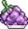
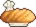

Meal Ribbon 우선순위 (티어 리스트)
Ribbon은 Death Bringer Grimoire에서 제공하는 중요한 계정 전체 강화 수단으로, 매일 초기화 시 제한된 수량이 추가되며 한 번 음식에 부착하면 영구적으로 유지됩니다. Ribbon은 랭크 1~20까지 존재하며 음식의 배율 효과를 높여주고, Ribbon Shelf에서 또는 동일한 Ribbon을 같은 음식에 중복 배치하면 합산됩니다. 랭크 5·10·15·20 단위로 배율이 눈에 띄게 크게 올라가므로, 가능하다면 이 수치를 목표로 삼는 것이 특히 유리합니다.
이 Ribbon 티어 리스트는 일반적인 음식 레벨 우선순위로도 활용할 수 있습니다. 다만 모든 음식을 고루 레벨업하는 것도 여전히 중요한데, 음식 레벨에 비례해 보너스가 오르는 여러 요리 관련 강화 요소(Diamond Chief 버블, Atom Collider Fluoride, Voidwalker Blood Marrow)가 있기 때문입니다. 또한 The Rift에서 해제되는 Cooking Mastery 포인트에도 유용한 기준이 됩니다. 단, Cooking Mastery 포인트는 현재 목표에 맞게 초기화하는 것이 좋습니다. 조리 속도 향상(Cabbage/Burned Marshmallow), 스킬 강화(Whipped Cocoa/Riceball/Corn), 전반적인 게임 플레이(Yumi Peachring) 등 목적에 따라 배분이 달라집니다.
사용 가능한 음식 수가 많으므로 자신의 계정 상황과 목표를 고려해 세부 우선순위를 조정하세요. 모든 음식, Ribbon, 관련 출처는 Idleon 위키 페이지에서 확인할 수 있습니다.
| 음식 (효과) | 티어 | 비고 |
|---|---|---|
| Yumi Peachring (Golden Food Bonus) | S+ | 게임 내 가장 강력한 음식으로 레벨 및 Ribbon 투자를 항상 최우선으로 해야 합니다. Golden Food는 계정 전반에 걸친 대형 보너스를 제공하며, World 6의 Beanstalk을 통해 패시브로 전환할 수 있습니다. |
| Cookies (Total Spelunking POW) | S | Spelunking의 보스에서는 강력한 보너스들이 나오며, 이 음식을 통해 보스에 더 빨리 도달할 수 있습니다. 보스 이후에도 POW는 드롭률 향상, 마스터클래스 자원, 매일 연금술 버블, 동상 드롭 등 다양한 Amber 획득 강화에 유용합니다. |
| Woahtermelon (Cheaper Spelunking Upgrades) | S | 위와 마찬가지로 Spelunking 진행을 도와줍니다. |
| Singing Seed (Amber gain from Spelunking) | S | 위와 마찬가지로 Spelunking 진행을 도와줍니다. |
| Large Pohayoh (Summoning EXP) | S | Summoning 레벨은 출처가 제한적인 주요 시간 제한 요소입니다. 레벨이 높을수록 별자리 파워와 Summoning Essence 생성이 향상됩니다. |
| Sticky Bun (All Summoning Essence Gain) | S | Summoning은 강력한 보너스와 무한 메커니즘을 갖추고 있어 이 스킬을 지속적으로 발전시키는 데 항상 유용합니다. |
| Cauliflower (Attack Speed) | S | Active(직접 플레이)를 위한 공격 속도의 희귀하고 주목할 만한 출처입니다 (거의 Active를 하지 않는다면 우선순위가 낮아집니다. AFK(방치) 공격 속도는 더 낮은 수준에서 상한선에 도달합니다). |
 Wraith Grapes (Divinity EXP) |
S | World 5 Divinity 레벨은 계정 진행과 전투력에 중요하며, 이를 통해 도달 가능한 Divinity 레벨이 높아지고 Divinity 스타일 초기 해제 시간이 단축됩니다. |
| Cotton Candy (Divinity EXP) | S | 위와 동일합니다. |
| Whipped Cocoa (Skill Efficiency) | S | 가장 큰 스킬 효율 음식으로, 다양한 스킬에 중요하며 연금술과 스탬프 등 핵심 메커니즘에 투자할 수 있는 자원 샘플의 3D Printer 결과물을 향상시킵니다. |
| Pumpkin (Liquid Cap for liquids 1 and 2) | A | 핵심 액체를 더 많이 저장할 수 있어 연금술 진행이 수월해집니다. 매일 Boron 업그레이드와 매시간 버블 클릭에 특히 유용합니다. |
| Riceball (Skill Efficiency) | A | 또 다른 스킬 효율 보너스지만 Whipped Cocoa보다는 약합니다. |
| Fortune Cookie (Faster Library Checkout Speed) | A | 캐릭터 탤런트 최대치 달성 시간을 단축하는 가장 큰 도서관 대출 속도 보너스 중 하나입니다. 여러 세계를 진행하면서 최대 레벨이 증가하는 다양한 메커니즘이 있어 지속적으로 유용합니다. |
| Bunt Cake (Cash from Monsters) | A | 가장 강력한 골드 획득 음식으로 Upgrade Vault 및 기타 돈 관련 게임 메커니즘에 유용합니다. |
| Tempura Shrimp (Spelunking EXP) | A | 스태미나처럼 캐릭터 레벨에 비례하는 여러 메커니즘이 있어 Spelunking 진행을 향상시킵니다. |
| Corn (Skill Efficiency) | A | 마지막으로 사용 가능한 스킬 효율 보너스 음식입니다. |
| Cabbage (Cooking Spd per 10 Kitchen LVs) | A | 가장 주목할 만한 요리 속도 음식으로, 아직 음식 레벨을 올리는 초기 요리 진행 단계에서 우선순위가 높지만, 최대 레벨에 도달하면 우선순위가 낮아집니다. |
| Burned Marshmallow (Meal Cooking Speed) | A | 음식 레벨을 더 빠르게 올리기 위한 두 번째로 좋은 요리 속도 음식입니다. 다른 요리 속도 음식에는 Ribbon을 사용하지 않는 것이 좋은데, 결국 다른 출처에 의존해야 하는 시점이 오기 때문입니다. |
| Cannoli (Points earned in Tower Defence) | B | 영혼 자원을 위한 워십 웨이브 진행이나 다양한 MSA 보너스를 위한 이 스탯의 고유한 출처입니다. |
| Pretzel (Lab EXP) | B | World 4 Laboratory에서 보내는 시간을 줄이고 무료 강력한 Pure Jewel을 해제하기 위해 더 높은 스킬 레벨로 진입할 수 있게 해줍니다. |
| Sausy Sausage (Bits Gained in Gaming) | B | Gaming Bits에 탄탄한 보너스를 주며 초기 Gaming 진행에 특히 유용합니다. 결국 다른 출처들이 이 음식의 효율을 앞지르게 됩니다. |
| Salad (Cash from Monsters) | B | 골드 획득에 유용한 또 다른 보너스입니다. |
| Giga Chip (Research EXP Gains) | B | World 7 Research 스킬 레벨업 속도를 높여주지만, 음식 보너스는 다른 출처에 비해 작습니다. |
| 2nd Wedding Cake (Minehead Mine currency gain) | B | World 7의 Minehead 미니게임 진행 시간을 조금 단축해 주는 소형 보너스입니다. |
| Tasty Treat (Polymer Refinery Speed) | B | 이 제련 속도를 개선하는 출처가 제한적이지만 기본 레벨당 0.01% 보너스로 매우 작으므로 다른 계정 강화를 먼저 우선시하세요. |
| Kiwi Fruit (Liquid Cap for liquids 3 and 4) | B | Pumpkin과 유사하게 세 번째와 네 번째 액체를 사용하는 상위 연금술 버블을 강화하기 시작할 때 편리합니다. |
| Sawdust (Lab EXP) | C | 추가 Lab EXP로, 더 빠른 랩 레벨을 원한다면 Garlicless Bread와 조합할 수 있습니다. |
| Nyanborgir (Crop Evolution Chance) | C | 작물 진화 확률의 가장 큰 출처로 다른 출처와 함께 파밍 진행을 돕고 몇 가지 추가 진화를 해제할 수 있습니다. |
| Bill Jack Pepper (Crop Evolution Chance) | C | 위와 동일합니다. |
 Head Chef Bread (Bits Gained in Gaming) |
C | Sausy Sausage와 비슷하지만 전체적인 보너스가 더 낮습니다. |
| Ratatouey (Lower Kitchen Upgrade costs) | C | 전반적인 요리 속도 향상과 더 빠른 새 레시피 해제를 위해 주방 레벨업에 도움을 줍니다. |